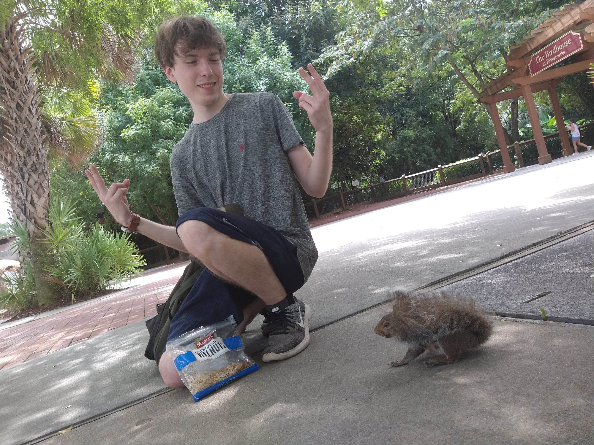

Only a little weird!

Chillin with a squirell. Nothing to see here.
As you can see from the image above, I really enjoy animals/nature. So much so that I am actually a vegan! Gaming is also a huge passion of mine. Games such as World of Warcraft, League of Legends, Smash Bros,
& God of War are some of my favorites. I'm just a massive nerd. Anything regarding VR, AI, or futuristic techonologies of any kind I'm simply fascinated by. I also enjoy meditation & anime.
Why I Want To Become A Coder
To work from home you silly goose!
Ever since I have been old enough to use a computer, I have been glued to the screen constantly. Essentially, I'm a bit of an introverted hermit who lives on the internet. In regards to thinking about what
profession would suite this sort of personality, coding seemed like a natural fit. Coding just also aligns with my general interest in technology as a whole. I also consider myself a logical thinker
which I know is an essential talent to have to becoming a succesful coder. Coding jobs provide the opportunity to work from home which suits my more reclusive tendencies. The salaries provided from this line of
work would give me the tools needed to live a more fufilling life. Overall, coding simply provides an opportunity to proove to myself that I can overcome obstacles and reach my goals.
I was born in Baltimore Maryland and am curently residing in Columbia South Carolina. I am 29 years old. I have experience working as a pizza delivery driver, doordasher, & being a self-employed online marketer.